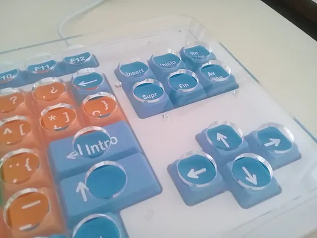
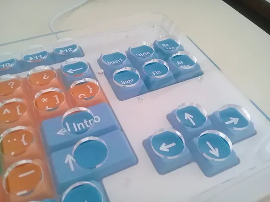

TECLADO ESPECIAL PARA ADULTOS MAYORES, PERSONAS CON BAJA VISIÓN Y USUARIOS CON DISCAPACIDAD MOTRIZ.
Teclado con letras y números de gran tamaño y colores diferenciados para vocales, consonantes, números, funciones, etc.
Facilita enormemente el tipeo, reduce los errores e incrementa significativamente la inclusión de miles y miles de personas a las TICs.
Disponible, también, de manera opcional un canalizador dactilar específicamente diseñado para este dispositivo.

 
